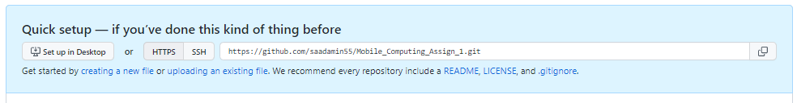
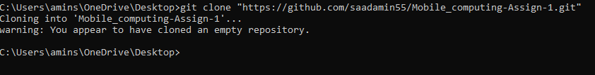
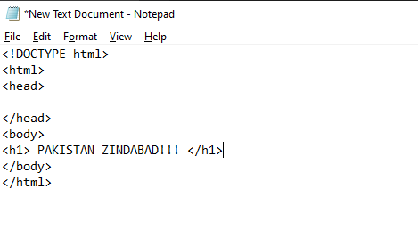
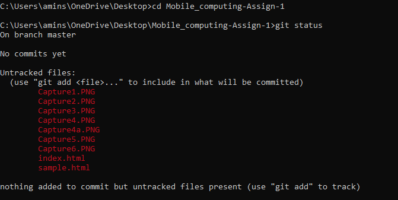
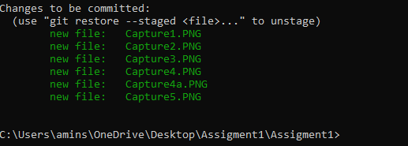
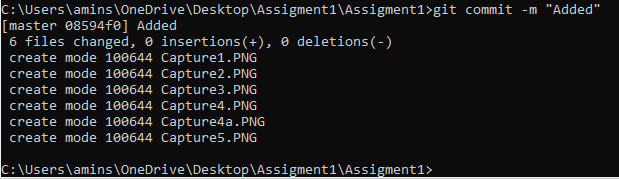
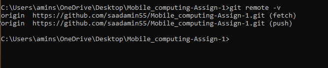
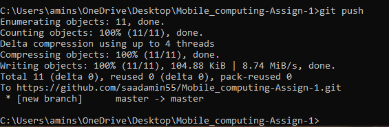

1.The First step is to Enter Reposiotry's name, its Description(optional) and then click on "Create Reposiotry
2.After that, you'll be directed to another page. Then Click HTTPS option and copy the generated Link
3. In third step, open the terminal to clone the Reposiotry into local Reposiotry.
4.Now in that local Reposiotry, Create a simple HTML file.
5. Now you can check the status by command "git status". If the name of file is in red, it means it's not been added yet
6. Now you can add by the command "git add ." and check the status. Files should be turned into Green.
7. Now commit the file along the message using command "git commit -m "anyMsg"
8. Now lastly, use the command "git remote -v" and then "git push" to push into the Reposiotry
 Thanks for visiting the page!!! If you have any queries, you can contact me on my gmail: aminsaad451@gmail.com